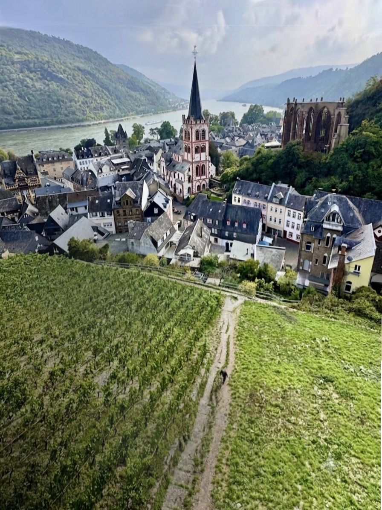
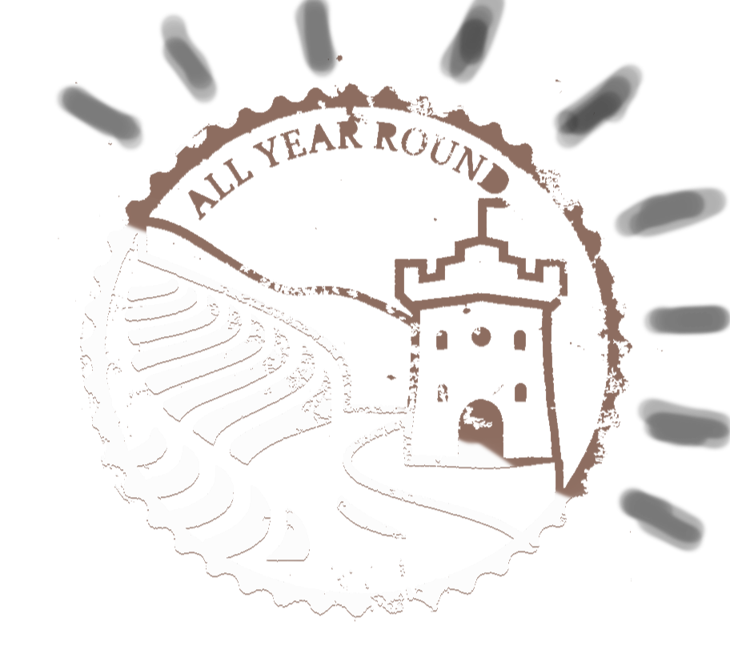
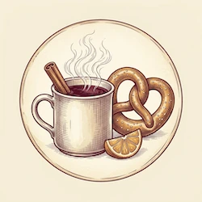
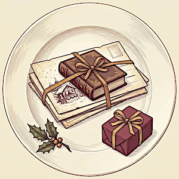
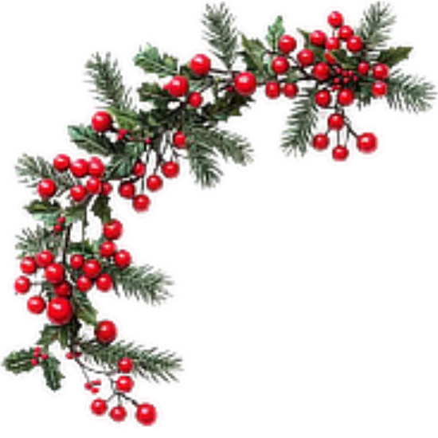
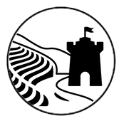

Castle tour
Town walk


Middle Rhine Valley
Castles, legends and vineyard towns
between Koblenz and Bingen —
guided at your own rhythm.
Find routes.
Для навигации удобнее держать телефон вертикально.For navigation, hold your phone upright.




Rhine Guide